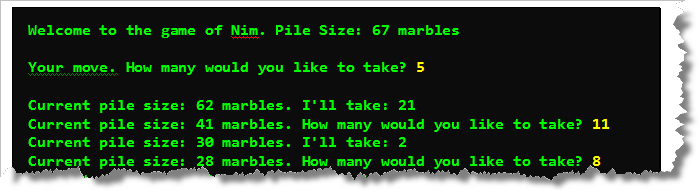

This week you should get more
practice writing your own classes including those
that throw exceptions and those that contain
static methods.
You'll also have an opportunity to write your own unit
tests.
Here's the list of things you should do this week.
-
Assertions & Exceptions—MyStudent:
Implement a class
MyStudent. For the purpose of this exercise, a student has a name and a total quiz score. Supply an appropriate constructor. (Remember, when you create a student, the total quiz score will be 0, so you don't need to pass that as a parameter.) Also, supply the following methods:String getName()
To compute the last method, remember that you'll also need to keep track of how many quizzes the student actually took.
void addQuiz(int score)
int getTotalScore()
double getAverageScore()If a programmer passes an empty
Stringor a null String to the constructor, then throw anIllegalArgumentException. Add an assertion togetTotalScore()to check that the total is not negative.There is no Check program for this assignment. You need to write your own unit test to check your code, which is the next exercise.
-
Unit Tests—MyStudentTest:
In class you learned how to write a unit test for the
PongScoreclass. Using the lecture (and the online text) as a model, write your own tests for MyStudent.javan named MyStudentTest.Your unit tests should completely check every constructor and method in the
MyStudentclass. You should make sure:- Test pass rate: all of your tests should pass.
- Code coverage: every method and every branch inside every method should be covered.
- Problem coverage: you should make sure that your inputs cover legitimate values as well as boundary conditions.
You can look on the Solutions page if you get stuck on this exercise.
-
Static Methods and Testing—Geometry:
Write a class named Geometry that contains the following
static methods.
sphereVolume(double r)sphereSurface(double r)cylinderVolume(double r, double h)cylinderSurface(double r, double h)coneVolume(double r, double h)coneSurface(double r, double h)
Each will be a static method that returns a double. Use Google to look up the appropriate formulae. (For the coneSurface make sure you include the entire surface area including the bottom of the cone, and not just the lateral surface area.)
Along with the Geometry class, implement a JUnit Test Case class named GeometryTest, that tests each of your methods.
You can look on the Solutions page if you get stuck on this exercise.
-
Extra-Credit Assignment #6—Multiple Interacting Classes):
For those of you looking for a challenge, complete the game of NIM.
Here's what the program should look like when you run it:

This larger problem makes use of multiple classes, and those classes must cooperate to play the game shown here. The Extra-Credit #6 Handout (PDF) has all of the information on completing the assignment.Submit Nim.jar before the deadline. Make sure your JAR file contains the source code for your classes.